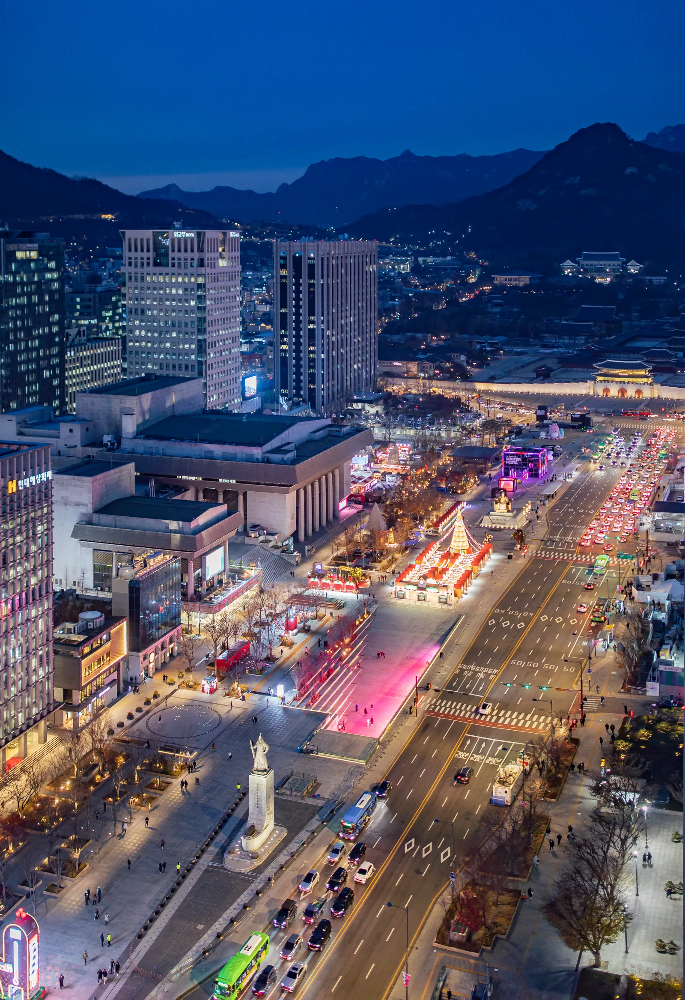
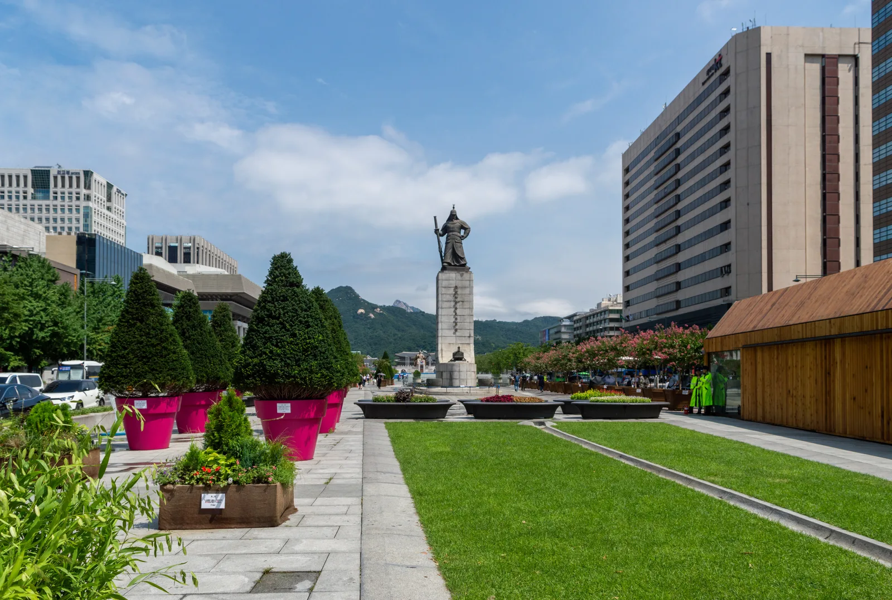
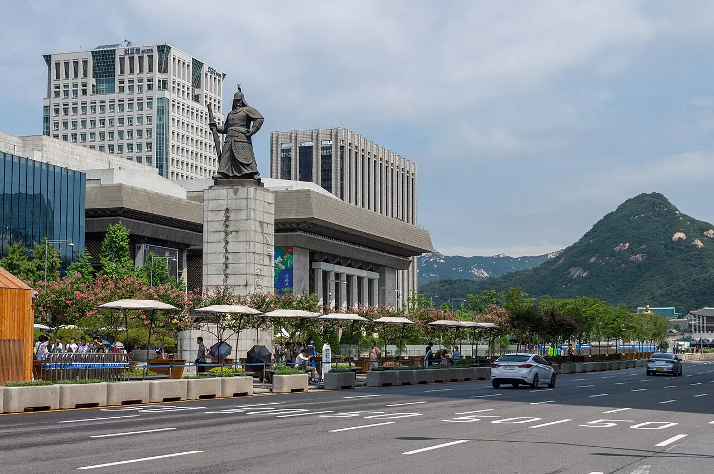
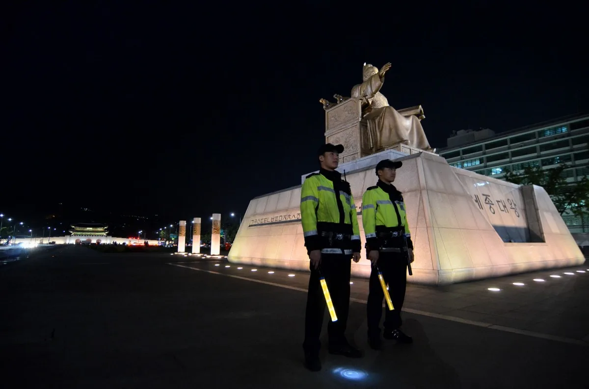
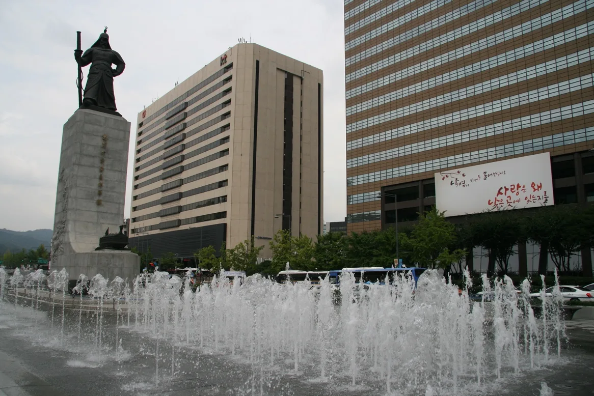
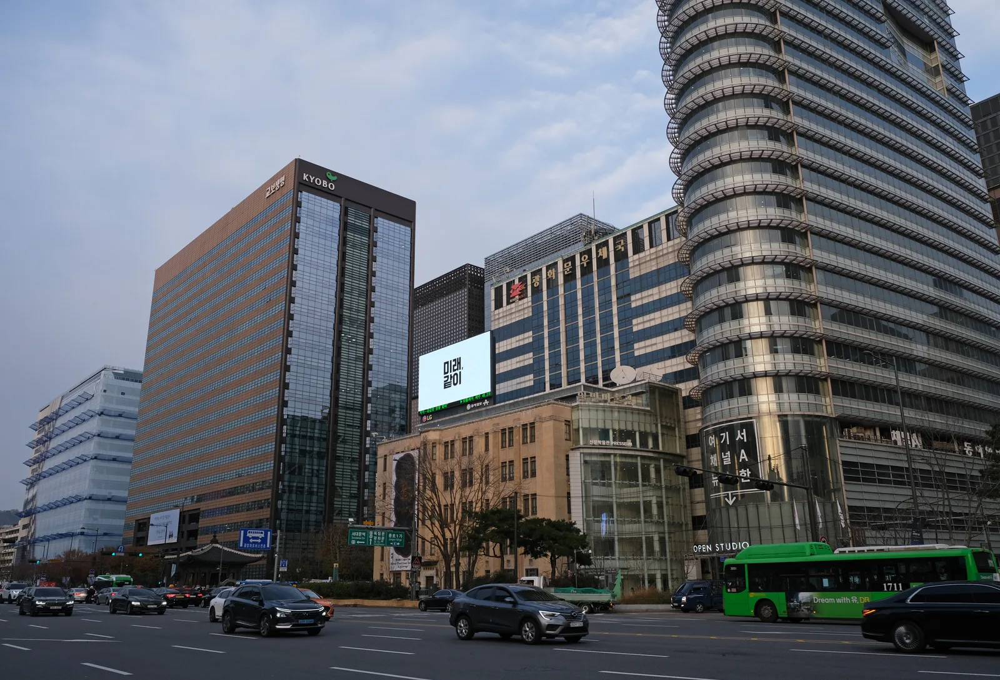
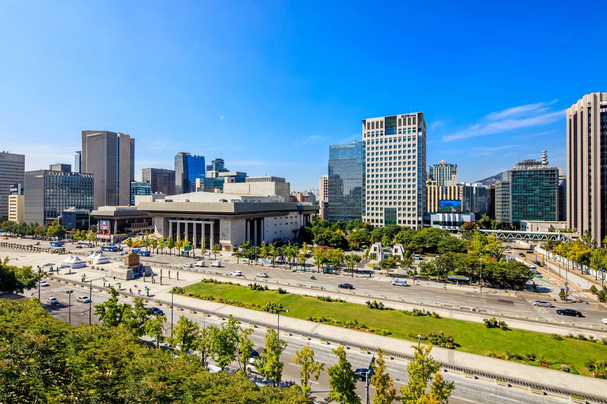
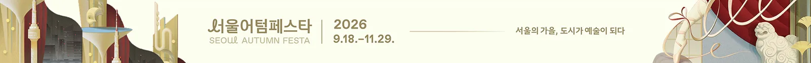

▲ 야간 조명이 켜진 광화문광장 일대. 9월 24일부터 27일까지 광장 놀이마당에서 '빛모락 가을축제'가 열린다
1. 9월 24~27일, 광화문광장 놀이마당이 무대가 된다
서울시가 주최하는 '빛모락 가을축제'가 2026년 9월 24일(목)부터 27일(일)까지 나흘간 광화문광장 놀이마당에서 열린다. 추석 연휴 시작일부터 연휴 마지막 날까지를 정확히 포함하는 일정이어서, 고향을 오가지 않고 서울에 머무르는 시민이라도 연휴 내내 광장을 오가며 축제를 즐길 수 있다. 행사명의 '빛모락'은 빛(光)과 모이다·즐기다의 어감을 살린 이름으로, 가을밤 광장을 채우는 공연과 체험 프로그램을 아우른다.

▲ 녹지가 늘어난 광화문광장. 2022년 재개장 이후 공원에 가까운 모습으로 조성돼 각종 시민 행사의 무대로 쓰이고 있다 ⓒ Wikimedia Commons

▲ 세종로변에서 바라본 광화문광장. 2022년 재개장 이후 쉼터와 녹지가 늘어난 모습이다 ⓒ Wikimedia Commons
2. 공연부터 체험까지 — 프로그램 라인업
| 구분 | 내용 |
|---|---|
| 무대 공연 | 퍼포먼스, 음악·연주 공연, 시네마콘서트 |
| 강연 | 어린이 도서·인문학 저자 강연(교보문고 협의) |
| 체험 프로그램 | 캘리그라피(글씨 써주기), 감성 엽서 쓰기, 그림 그리기 |
| 전통·만들기 | 전통 놀이, 만들기 체험 |
| 운영 기간 | 9월 24일(목)~27일(일), 4일간 |
| 장소 | 광화문광장 놀이마당 |
| 비용 | 무료 |
시네마콘서트는 영화 상영과 라이브 연주를 결합한 무대 공연으로, 최근 몇 년간 서울시 가을 축제에서 꾸준히 인기를 끌어온 프로그램이다. 여기에 어린이를 위한 도서·인문학 저자 강연이 교보문고와의 협의를 통해 마련될 예정이어서, 아이와 함께 방문하는 가족 단위 관람객도 즐길 거리가 많다. 캘리그라피 체험이나 감성 엽서 쓰기처럼 손으로 직접 무언가를 만드는 프로그램도 준비돼, 공연만 보고 지나치기보다 광장에 머무르며 참여할 거리가 다양한 편이다.

▲ 광화문광장의 세종대왕 동상. 축제가 열리는 놀이마당은 광장 남쪽, 세종대왕 동상에서 가까운 구역에 자리한다 ⓒ Wikimedia Commons (CC0)

▲ 세종로 사거리에 자리한 충무공 이순신 장군 동상. 광화문광장 남쪽, 놀이마당으로 향하는 길목에서 만날 수 있다 ⓒ Wikimedia Commons
3. 지하철로 가는 법 — 3호선 경복궁역, 5호선 광화문역

▲ 광화문광장 주변 도심 풍경. 3호선과 5호선 두 개 노선으로 접근할 수 있어 대중교통 이용이 편리하다 ⓒ Wikimedia Commons
광화문광장은 지하철 3호선과 5호선 두 개 노선으로 접근할 수 있다. 3호선을 이용한다면 경복궁역에서 내려 6번 출구로 나온 뒤 정부중앙청사·광화문 방향으로 이동하면 된다. 5호선을 이용한다면 광화문역에서 내려 해치마당 연결통로나 7번 출구로 나와 광장숲 방향으로 걸으면 바로 광장에 닿는다. 주변에 별도의 대규모 방문객용 주차장은 마련돼 있지 않은 만큼, 인근 공영·민영 주차장 요금과 만차 여부는 서울시 주차정보안내시스템에서 미리 확인하고 방문하는 것이 안전하다. 바로가기
📍 참고로 알아두면 좋은 것
광화문광장은 2022년 재개장 이후 기존보다 녹지 공간이 크게 늘어나 공원에 가까운 형태로 바뀌었다. 놀이마당은 광장 내에서도 시민 참여형 행사가 자주 열리는 구역으로, 빛모락 가을축제 외에도 계절마다 다양한 무료 문화 프로그램이 이 공간에서 운영된다.
4. 연휴 내내 이어지는 서울의 다른 무료 행사들

▲ 세종대로를 따라 늘어선 세종문화회관 일대. 광화문광장 주변에는 도보로 이동 가능한 문화시설이 밀집해 있다 ⓒ Wikimedia Commons
빛모락 가을축제와 함께 챙겨볼 만한 추석 연휴 무료 프로그램도 여럿이다. 서울광장·광화문·청계천 일대에서는 야외도서관 서비스가 11월 1일까지 무료로 운영되며, 남산골한옥마을에서는 9월 25일부터 27일까지 전통공연과 놀이 체험을, 돈화문국악당에서는 9월 24~25일 전석 무료 국악 공연을 관람할 수 있다. 광화문광장을 중심으로 도보 이동이 가능한 거리에 이런 프로그램들이 모여 있는 만큼, 연휴 하루를 통째로 광화문·종로 일대 나들이 코스로 짜보는 것도 좋은 방법이다.
5. 문의처 정리

▲ 서울시 펀서울(FUN SEOUL)이 안내하는 2026 가을 축제 프로모션 배너. 빛모락 가을축제를 포함한 서울시 가을 행사 정보를 모아 확인할 수 있다 ⓒ 서울특별시
세부 시간표나 강연자 라인업 등 최신 공지는 방문 전 펀서울 홈페이지나 광화문광장 공식 홈페이지에서 다시 확인하는 것이 안전하다. 문의는 서울시 다산콜센터(☎ 120) 또는 광화문광장 운영팀(☎ 02-2133-2538)으로 하면 된다.
✅ 광화문 빛모락 가을축제, 이것만은 확인하세요
· 2026년 9월 24일(목)~27일(일) 나흘간, 광화문광장 놀이마당에서 개최
· 무대 공연(퍼포먼스·음악·시네마콘서트)부터 어린이 저자 강연, 캘리그라피·전통놀이 체험까지 무료 운영
· 지하철 3호선 경복궁역 6번 출구 또는 5호선 광화문역 7번 출구·해치마당 연결통로로 접근
· 별도 방문객 주차장 없음 — 서울시 주차정보안내시스템에서 인근 주차장 사전 확인 권장
· 세부 시간표는 펀서울·광화문광장 공식 홈페이지에서 재확인
6. 정리
빛모락 가을축제는 추석 연휴 나흘을 꽉 채우는 일정과, 공연부터 체험까지 아우르는 다채로운 프로그램이 강점이다. 지하철 두 개 노선으로 접근이 쉽고 입장료도 없는 만큼, 연휴에 멀리 떠나지 않고도 광화문광장에서 가을밤을 즐길 수 있는 선택지로 손색없다.